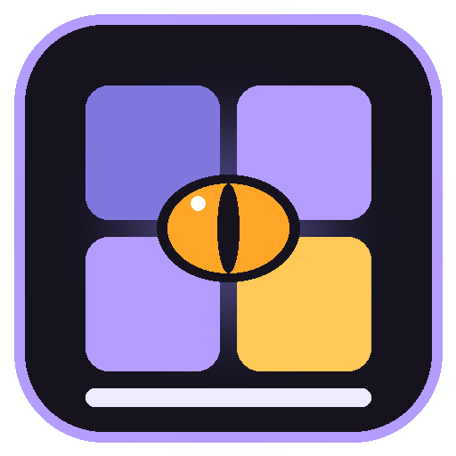

| Onderdeel | Wat het doet |
|---|---|
| Bureaublad | De achtergrond met je favoriete apps als pictogrammen. Klik op een pictogram om de app te openen. |
| Taakbalk links | De tijd en de datum, groot. |
| Taakbalk midden | Een knop voor elke open app. Klik om naar die app te gaan, klik nog eens om hem te minimaliseren. |
| Taakbalk rechts | Volledig scherm / Venster en de grote knop Menu. |
Klik rechtsonder op Menu (of druk Ctrl+Esc). Links staan de categorieën: Alle apps, AI, Games, Media en creatief, Tools en kantoor, Systeem en beveiliging, Web en servers, Mobiel, Overig en Windows. Rechts staan de apps van die categorie.
Bovenin staat een zoekveld: typ een deel van de naam en druk op Enter om de eerste app te starten. Esc of ernaast klikken sluit het menu.
Onderaan: ⚙ Instellingen, ♥ Doneren, 📖 Snelgids, ℹ Over DraveOS en rechts ⏻ Afsluiten.
| ▶ Starten | Opent de app in DraveOS. |
| Openen buiten DraveOS | Opent de app als gewoon Windows-venster. |
| Op het bureaublad zetten | Zet de app als pictogram op het bureaublad (of haalt hem eraf). |
| Map openen | Opent de map waar de app staat. |
| Verbergen in het menu | Haalt de app uit het menu. Terugzetten kan bij Instellingen. |
Een app opent in DraveOS, in een eigen venster met titelbalk en de knoppen minimaliseren, maximaliseren en sluiten. Elk venster heeft een eigen titelbalk met de knoppen — (minimaliseren naar de taakbalk), ☐ (maximaliseren) en ✕ (sluiten). Slepen aan de titelbalk verplaatst het venster, dubbelklikken maximaliseert, en met het hoekje rechtsonder maak je het groter of kleiner. Sluit je een app, dan wordt hij echt afgesloten (ook als hij normaal naar het systeemvak gaat).
In de categorie 🪟 Windows staan Windows' eigen programma's. Ook die openen in DraveOS, met dezelfde titelbalk en knoppen:
| Kladblok, Paint, Speciale tekens | Openen in DraveOS. Bij sluiten vraagt Kladblok nog of je wilt opslaan. |
| Verkenner, Configuratiescherm | Openen in DraveOS. Deze worden nooit hard gestopt (ze horen bij Windows zelf). |
| Opdrachtprompt | Opent in DraveOS. |
| Rekenmachine | Opent als gewoon Windows-venster (deze moderne app laat zich niet inbedden). |
Wil je deze categorie niet? Zet bij ⚙ Instellingen het vinkje Windows-programma's in het menu uit.
Rechtsklik op het bureaublad en kies 🖼 Achtergrond:
| Kleuren | Dravenlock paars, Nachtblauw, Bos, Zonsondergang of Antraciet. |
| Eigen foto kiezen ... | Kies een foto van je pc. DraveOS bewaart een kopie in DraveOS-data, dus het origineel mag je verplaatsen. |
| Mijn Windows-achtergrond | Gebruikt dezelfde achtergrond als je Windows-bureaublad. |
| Foto: vullen / passend / uitrekken / in het midden | Hoe de foto op het scherm past. |
| DraveOS-logo op de achtergrond | Het logo in het midden aan of uit (alleen bij de kleuren). |
F11 (of de knop op de taakbalk) wisselt tussen volledig scherm en een venster zo groot als het scherm. Bij Instellingen kies je hoe DraveOS start.
| Starten in volledig scherm | Aan of uit. |
| Achtergrond | Een kleur, een eigen foto of je Windows-achtergrond, en hoe de foto past. |
| Tekstgrootte | Normaal, Groot of Extra groot. |
| Mappen waar je apps staan | DraveOS zoekt hier naar je Drave-apps (.exe). Voeg mappen toe of haal ze weg. |
| Verborgen apps | Dubbelklik om een app weer in het menu te zetten. |
Klik in het menu op ⏻ Afsluiten. Alle open apps worden ook gesloten, zodat er niets op de achtergrond blijft draaien. Eerst worden ze netjes gevraagd te sluiten. Vraagt een app nog iets (zoals "Wil je opslaan?"), dan laat DraveOS dat zien en vraagt of je toch wilt afsluiten.
| F11 | Volledig scherm aan/uit |
| Ctrl+Esc | Menu openen/dicht |
| Enter in het zoekveld | Eerste gevonden app starten |
| Esc | Menu sluiten |
Je instellingen staan naast DraveOS in de map DraveOS-data.